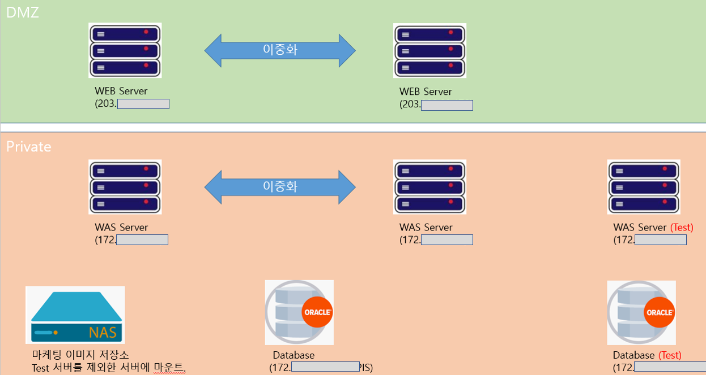
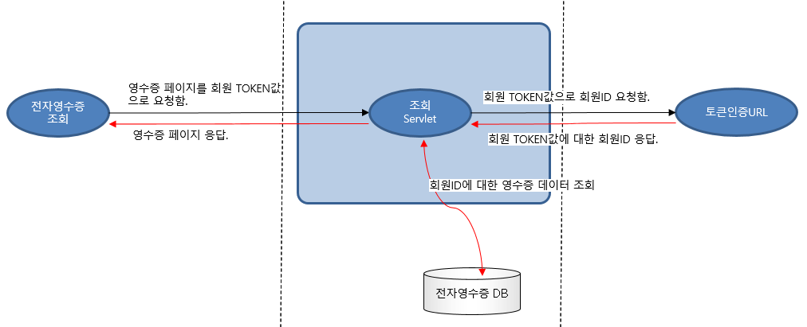
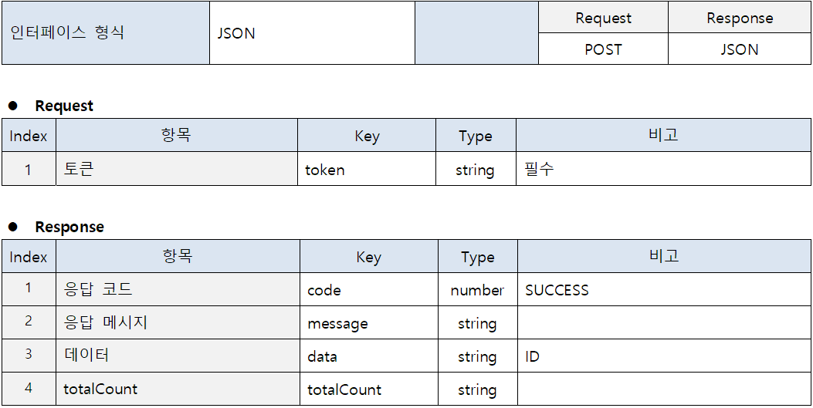
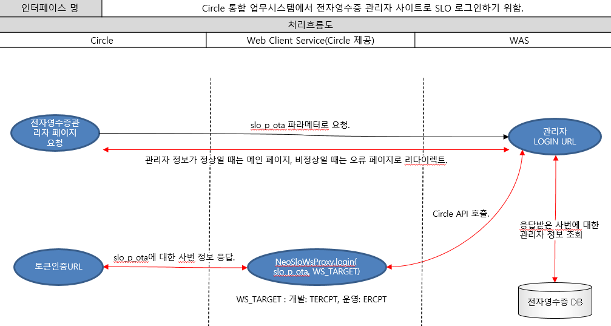

IBM AIX 웹 서버(WebtoB) 2대, WAS 서버(JEUS, Java8) 2대, 데이터베이스 서버, NAS 서버, 테스트 WAS, 데이터베이스 서버로 구성되어 있으며,
한화 서버 담당 부서에 구축하였습니다.
배포는 웹 또는 WAS 서버에 파일을 업데이트한 뒤 webadmin에서 jeus를 재기동하였습니다.

앱, 웹페이지, 토큰서버 간의 인터페이스를 통해 회원의 영수증 정보를 가져오는 구조로 되어 있습니다.
회원이 앱에 로그인하여 전자영수증 리스트 페이지를 요청할 때 앱 토큰 값을 파라메터도 함께 전송합니다.
웹페이지에서 수신한 앱 토큰 값을 토큰 인증 서버로 전송하여 회원ID를 전달 받은 뒤 데이터베이스에 조회하여
회원 영수증 리스트를 화면에 출력합니다.

토큰 서버는 한화 측 시스템으로 Rest API로 제공되었으며 String 토큰 값에 대해 JSON 형식으로 응답을 주었습니다.

이외 관리자 백오피스와 한화 통합 업무 시스템(Circle)과의 로그인 연동(SLO)를 위한 인터페이스도 있습니다.

갤러리아 전자영수증
한화 갤러리아 백화점 앱에서 사용되는 전자영수증 및 백오피스를 개발하는 프로젝트입니다.
개발단계는 사내에서 진행하였고 배포 및 테스트 단계는 한화 본사에 며칠간 상주하면서 진행하였습니다. 개발팀은 개발팀장, 안드로이드 개발자, 아이폰 개발자, 영수증데이터 수집 프로세스 개발자, 영수증 화면 및 백오피스 웹개발자(Me), 퍼블리셔 이렇게 6명이 참여 하였습니다.
전자영수증에서 웹 개발 항목은 아래와 같습니다.
- 앱 설정에서 전자영수증 ON/OFF 업데이트 API 제공.
- 고객 전자영수증 리스트 화면.
- 고객 전자영수증 상세 화면(앱, 문자 발신용 2가지 버전).
- 상세화면에 영수증 코드로 바코드 표시.
- 상세화면 PDF 다운로드.
- 상세화면 좌우 슬라이더로 이전 이후 영수증 보기 기능.